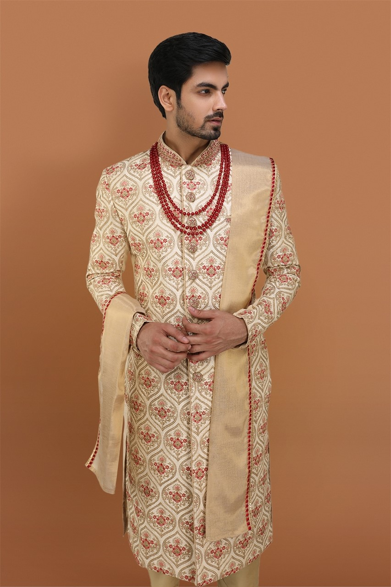
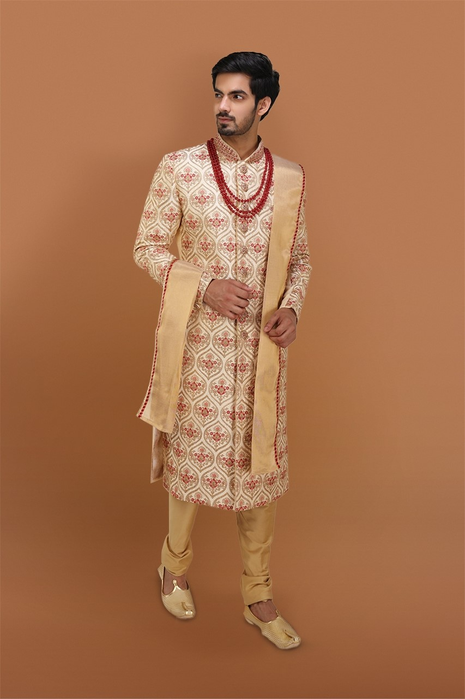
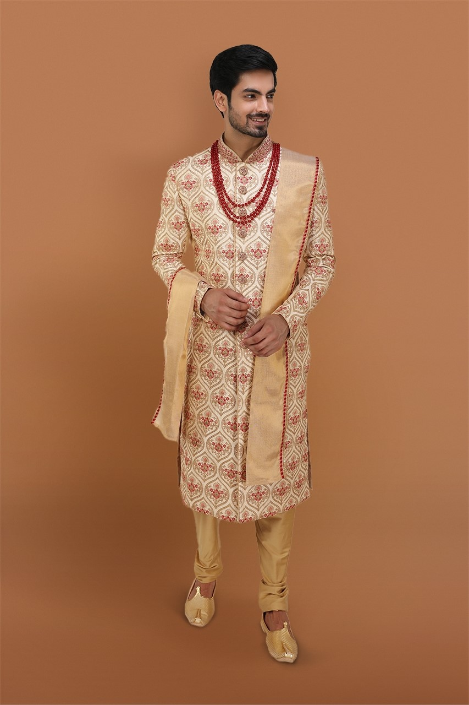
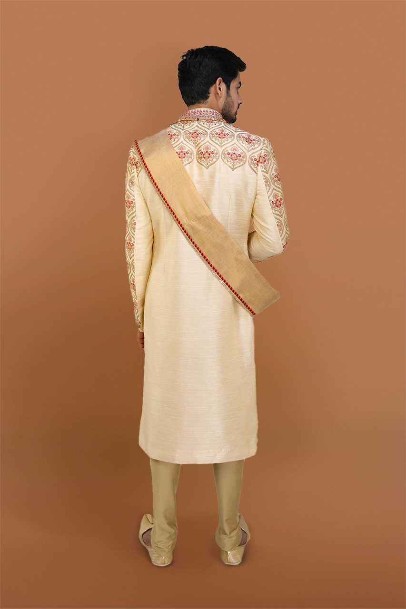

<div class="container mt-5">
    <div class="row">
        <div class="col-md-6">
            <div class="card-1">
            <div class="wrapper">
                <div class="product-box">
                    <div class="all-images">
                        <div class="small-images">

                            
                            
                            
                            

                        </div>

                        <div class="main-images">
                            
                        </div>
                    </div>
                </div>
            </div>
          </div>  

    </div>
    <div class="col-md-6">
        <div class="card">
            <div class="product-content">
            <p class="_p-name">Sherwani for Men   </p>
            <div class="_p-price-box">
               <div class="p-list">
                  
                  <span class="price"> Rs. 7999 </span>
               </div>
               <div class="_p-add-cart">
                  <div class="_p-qty">
                     <span>Add Quantity</span>
                     <div class="value-button decrease_" id="" value="Decrease Value">-</div>
                     <input type="number" name="qty" id="number" value="1" />
                     <div class="value-button increase_" id="" value="Increase Value">+</div>
                  </div>
               </div>
               <div class="_p-features">
                  <span> Description About this product:- </span>
                  Solid color polyester/linen full blackout thick sunscreen floor curtain
                  Type: General Pleat
                  Applicable Window Type: Flat Window
                  Format: Rope
                  Opening and Closing Method: Left and Right Biparting Open
                  Processing Accessories Cost: Included
                  Installation Type: Built-in
                  Function: High Shading(70%-90%)
                  Material: Polyester / Cotton
                  Style: Classic
                  Pattern: Embroidered
                  Location: Window
                  Technics: Woven
                  Use: Home, Hotel, Hospital, Cafe, Office
                  Feature: Blackout, Insulated, Flame Retardant
                  Place of Origin: India
                  Name: Curtain
                  Usage: Window Decoration
                  Keywords: Ready Made Blackout Curtain                        
               </div>
               <form action="" method="post" accept-charset="utf-8">
                  <ul class="spe_ul"></ul>
                  <div class="_p-qty-and-cart">
                     <div class="_p-add-cart">
                        <button class="btn-theme btn buy-btn" tabindex="0">
                        <i class="fa fa-cart-plus"></i> Add to Cart
                        </button>
                        <button class="btn-theme btn btn-danger" tabindex="0">
                        <i class="fa fa-heart"></i> Add to Wishlist
                        </button>
                        <input type="hidden" name="pid" value="18" />
                        <input type="hidden" name="price" value="850" />
                        <input type="hidden" name="url" value="" />    
                    </div>
                  </div>
                

    